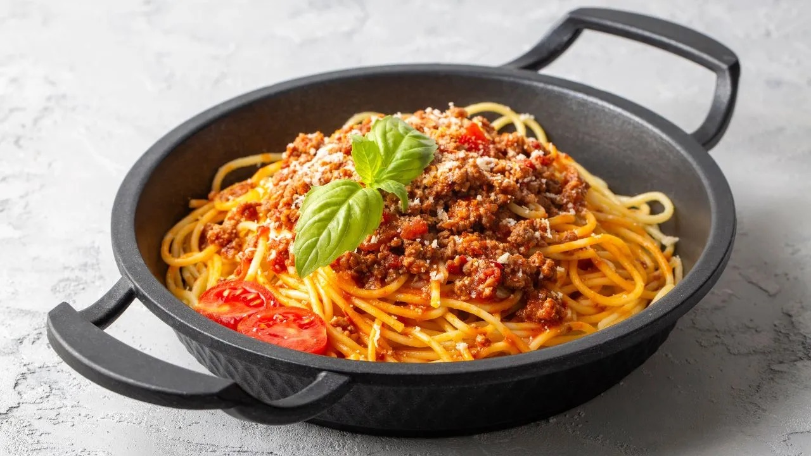

Home
Spaghetti Bolognese

Description
Spaghetti Bolognese is a classic Italian dish with a slow-simmered meat sauce that’s rich, hearty, and deeply flavorful.
It’s perfect for a satisfying dinner and pairs beautifully with grated Parmesan and a side of crusty bread.
Ingredients
- 250g spaghetti
- 300g ground beef
- 1 cup tomato sauce
- 1 garlic clove, minced
- Olive oil, salt, and pepper
Steps
- Cook the spaghetti and set aside.
- Sauté garlic and beef in olive oil.
- Add tomato sauce and season.
- Simmer for 15 minutes.
- Serve sauce over spaghetti.